E-text prepared by Suzanne Shell, Erika Q. Stokes,
and the Project Gutenberg Online Distributed Proofreading Team
(https://www.pgdp.net)
Kate Greenaway used an early version of the rhyme to illustrate A APPLE PIE which was first published in 1886 and it will be noticed that there is no rhyme for the letter I.
The rhyme of A APPLE PIE is very ancient and reference is made to it as early as 1671 in one of the writings of John Eachard. In these early versions the letters I and J were not differentiated. The letter J as we know it to-day was the curved initial form of the letter I and was always used before a vowel.
London FREDERICK WARNE & Ltd. & New York
Printed in Great Britain by W & J Mackay Limited, Chatham from original woodblock designs engraved in 1886
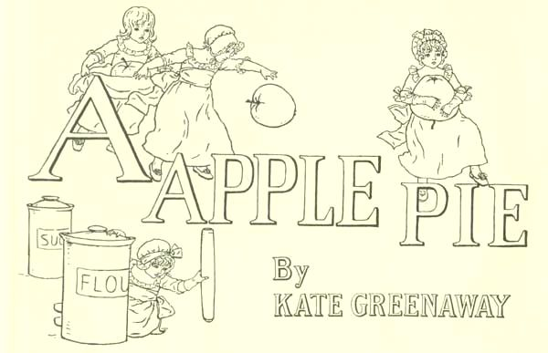
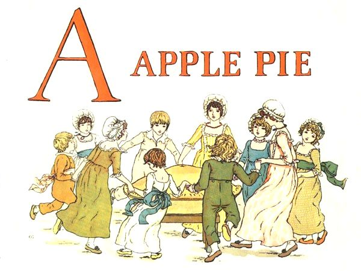
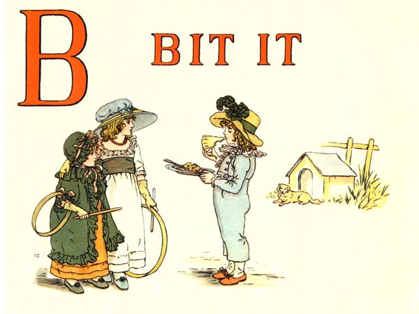
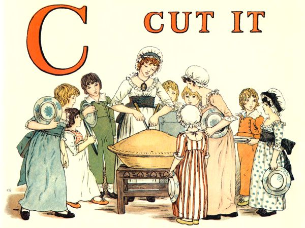
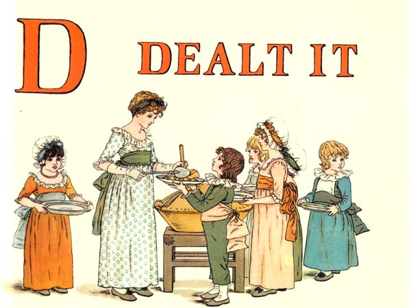
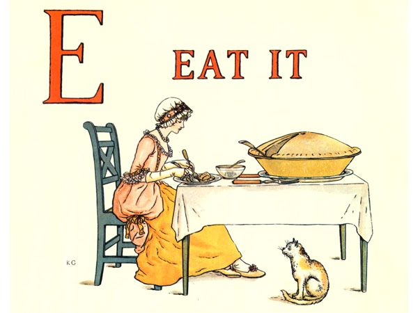
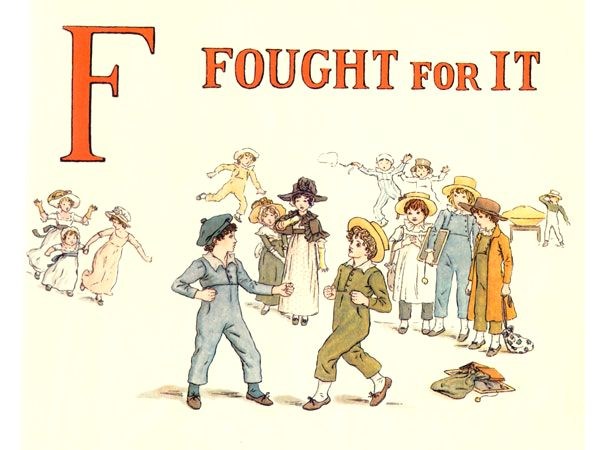
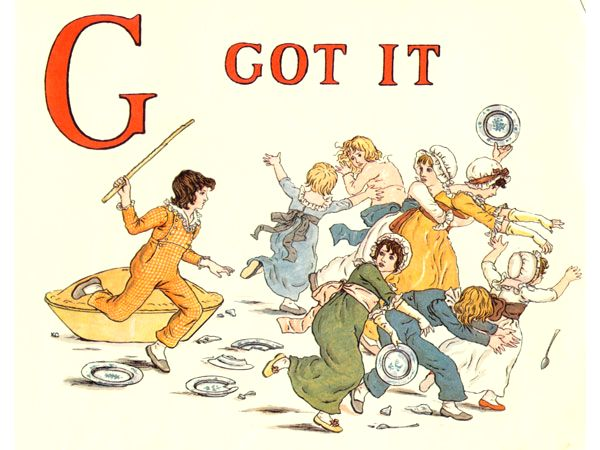
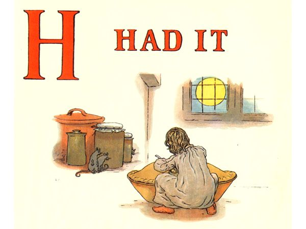
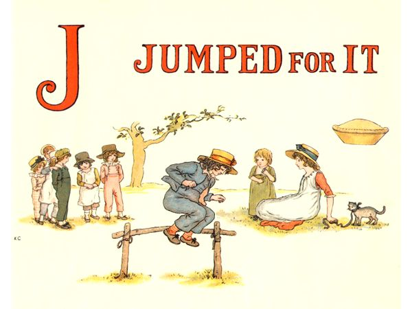
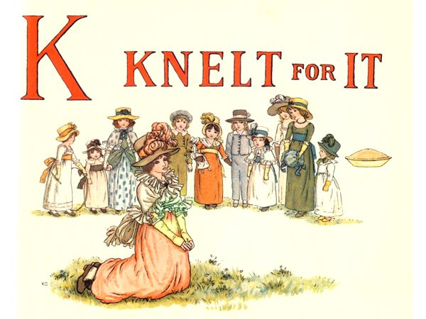
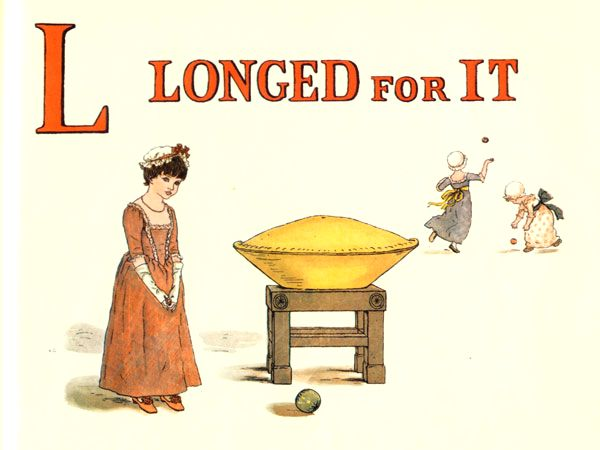
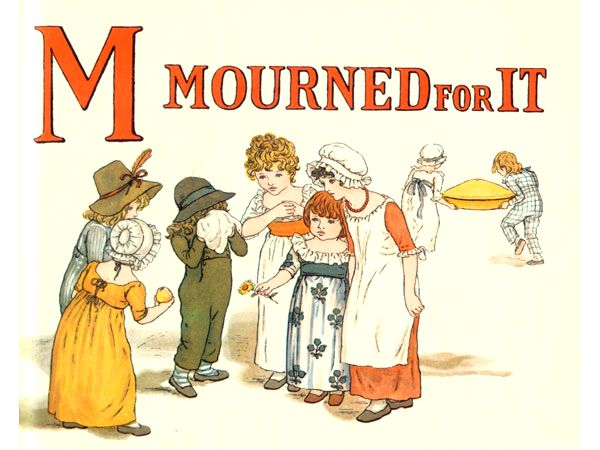
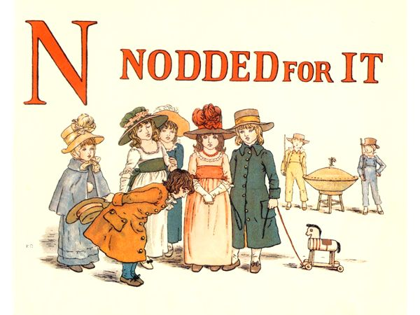
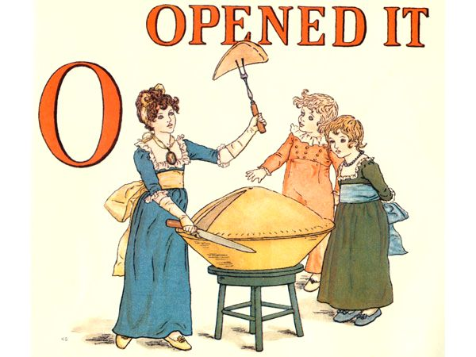
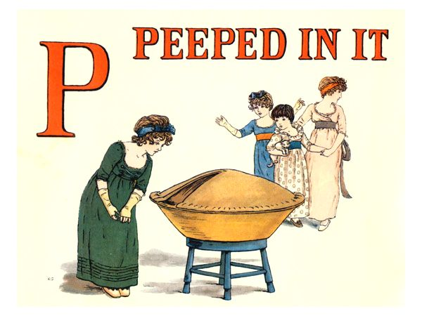
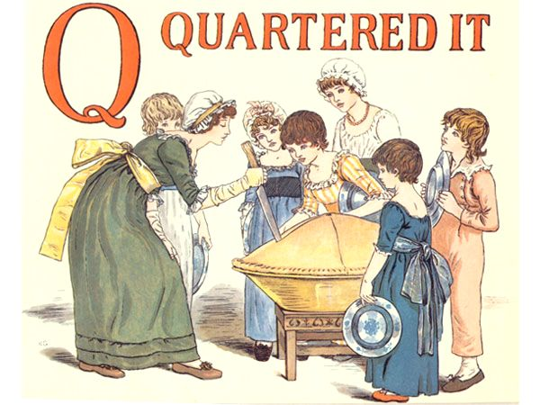
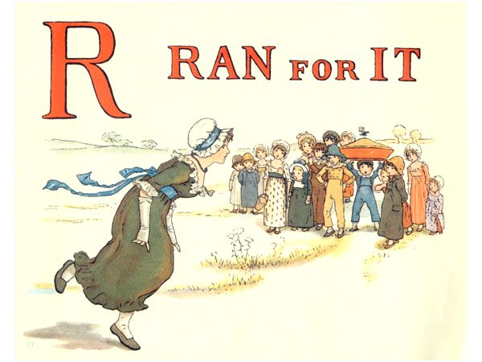
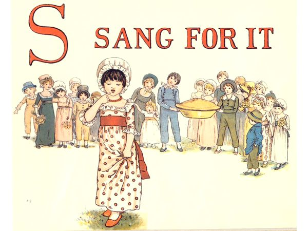
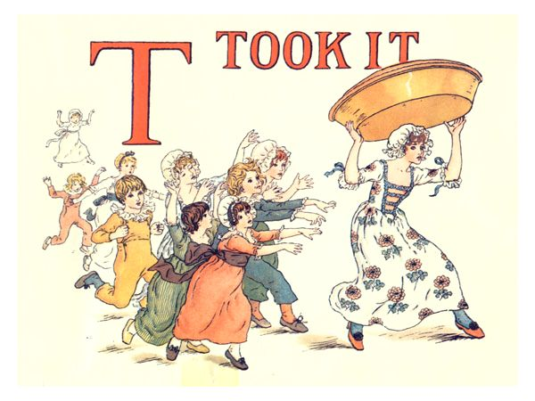
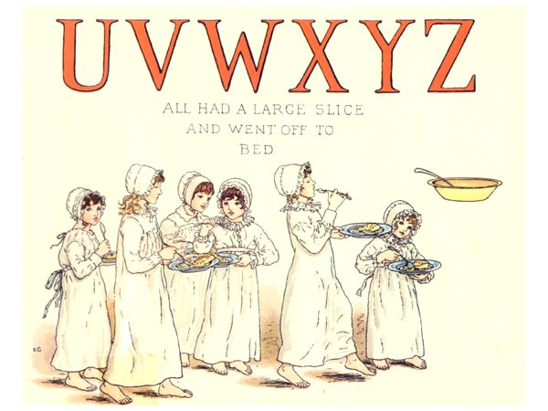